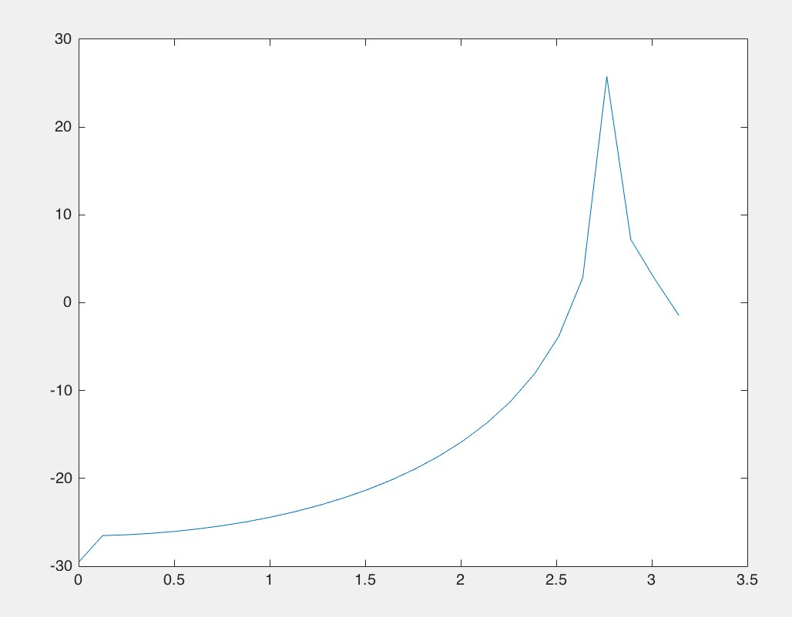
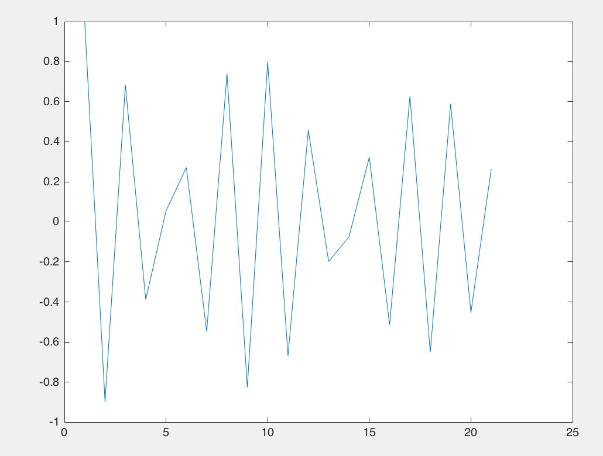
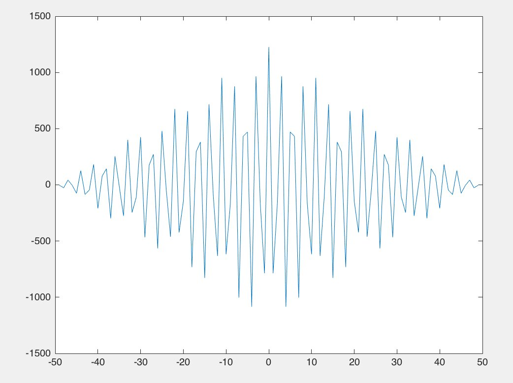
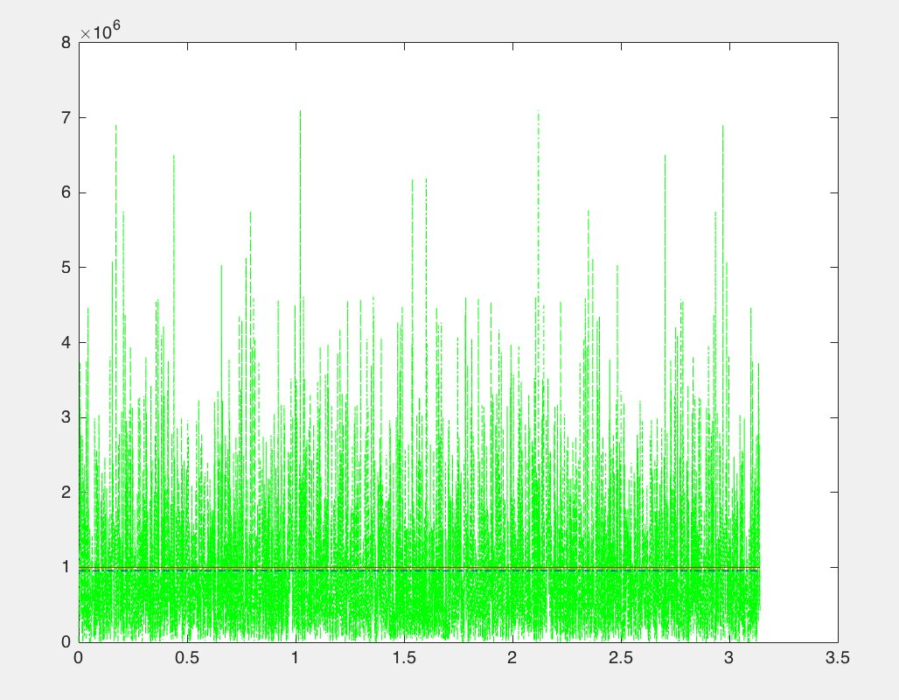

· EEM301
EEM301 Sinyaller ve Sistemler I: Ödev 3, MATLAB ile Özilinti, Çapraz İlinti ve Beyaz Gürültü (2016)
EEM301 – Sinyaller ve Sistemler I · 21.05.2016 · 16.10.2026
Bu yazı, Başkent Üniversitesi EEM301 Sinyaller ve Sistemler I klasöründeki Mayıs 2016 tarihli Ödev 3 dosyalarını içeriyor: Hasan Can Öztürk'ün MATLAB kodları ve ekran görüntüleri ile bir arkadaşın aynı ödev için yazdığı kodlar ve grafikler (kişisel bilgiler çıkarıldı). Konular özilinti (autocorrelation), çapraz ilinti (cross-correlation), periodogram ile güç spektrumu ve beyaz gürültünün güç spektral yoğunluğu (PSD). Kodlar ve grafikler yazının sonunda ZIP olarak indirilebilir.
Özilinti ve güç spektrumu
Kosinüs sinyali 0–100 aralığında 50 noktada örnekleniyor; autocorr ile özilintisi, periodogram ile güç spektrumu (dB) çiziliyor:
t=linspace(0,100,50);
x=10*cos(300*t+72);
figure(1);
N = length(x);
xlim([0,N])
Y=autocorr(x);
plot(Y)
figure(2)
[Pxx,F] = periodogram(x,[],length(x));
plot(F,10*log10(Pxx));Klasördeki kendi korelasyon.m dosyasında aynı kod x = 10cos(0·t + 0), yani sabit bir sinyal için duruyor; ekran görüntüleri ise kosinüslü sürüme ait.


Not: Örnekleme aralığı 100/49 ≈ 2.04 s olduğundan cos(300t) gibi yüksek frekanslı sinyaller ciddi biçimde örtüşmeye (aliasing) uğrar; periodogramdaki tepe asıl frekansın değil, örtüşmüş frekansın yerini gösterir. Gerçek frekansı görmek için örnekleme aralığı π/300'den küçük olmalıdır.
Çapraz ilinti
t=linspace(0,100,50);
x=10*cos(900*t+0);
y=5*cos(900*t+0);
figure(1);
N = length(x);
xlim([0,N])
[acor,lag]=xcorr(x,y);
plot(lag,acor)Aynı frekanslı iki kosinüsün çapraz ilintisi, sıfır gecikmede en büyük değeri alan ve kenarlara doğru üçgensel olarak azalan salınımlı bir dizi verir (−49…49 gecikme). Arkadaşın sürümünde frekanslar ve fazlar farklı: x = 10cos(900t + 52), y = 5cos(400t + 37).

Beyaz gürültünün güç spektral yoğunluğu
Arkadaşın beyazgurultu.m dosyası, standart sapması σ = 1000 olan 4372 örneklik Gauss gürültüsünün PSD'sini FFT ile hesaplayıp kuramsal değer σ² ve ortalama PSD ile karşılaştırıyor:
sigma = 1000;
L = 4372;
noise= randn(1,L) * sigma;
PSD = abs(fft(noise)).^2/length(noise);
vect_freq = linspace(0,pi,length(PSD));
plot(vect_freq,PSD,'-.g');
hold on, plot([vect_freq(1) vect_freq(end)],[sigma^2 sigma^2],'r');
hold on, plot([vect_freq(1) vect_freq(end)],[mean(PSD) mean(PSD)],'-.b');PSD değerleri bütün frekanslarda rastgele dalgalanır ama ortalaması σ² = 10⁶ çizgisine oturur; beyaz gürültünün spektrumu düzdür.

Not: linspace(0,pi,length(PSD)) FFT'nin bütün 0–2π aralığını 0–π'ye sıkıştırır; doğru eksen linspace(0,2*pi,L) (ya da yalnız ilk yarının çizilmesi) olmalıdır. Düz spektrumda bu, grafiğin görünüşünü değiştirmez.